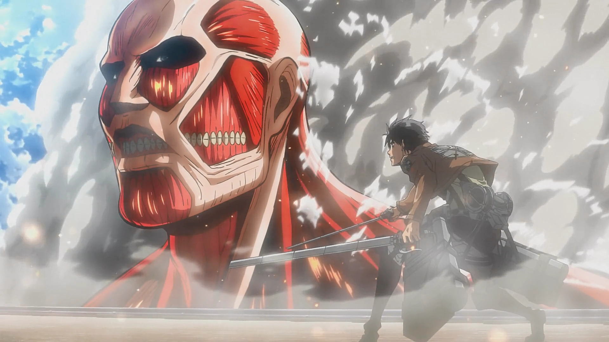
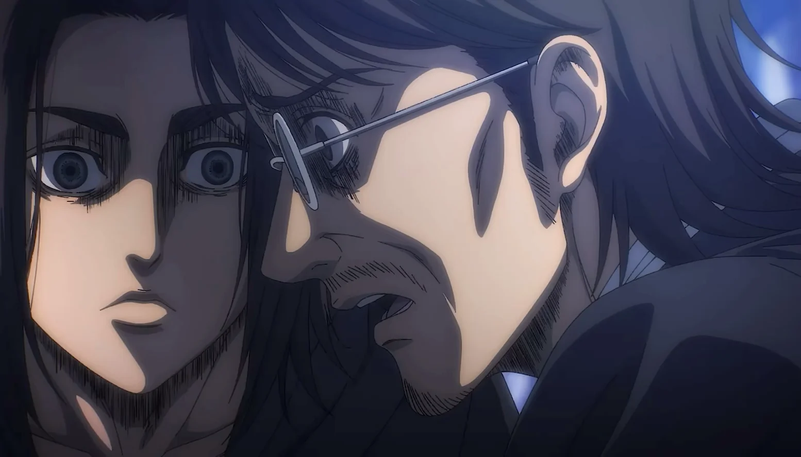

Some Plot Special Moments

This is my favorite scene of AOT. Eren got what he wants to do for all these training years. He want to destroy colossol titan , and he is right infront of him.

The best god moment of Levi. He smashed the beast titan in an instant. This scene gives an idea about how much levi is powerful. Mankind strongest soldier.

This is the moment of 1'st expedition. When armin got caught by female titan. This is the foreshadowing of the twist that annie was female titan. Because she left armin after smiling.

This is the major twist of AOT. It was finally revealed that eren started the revolution to free paradise. Attack titan can travel back in time and manipulate the holder's actons.